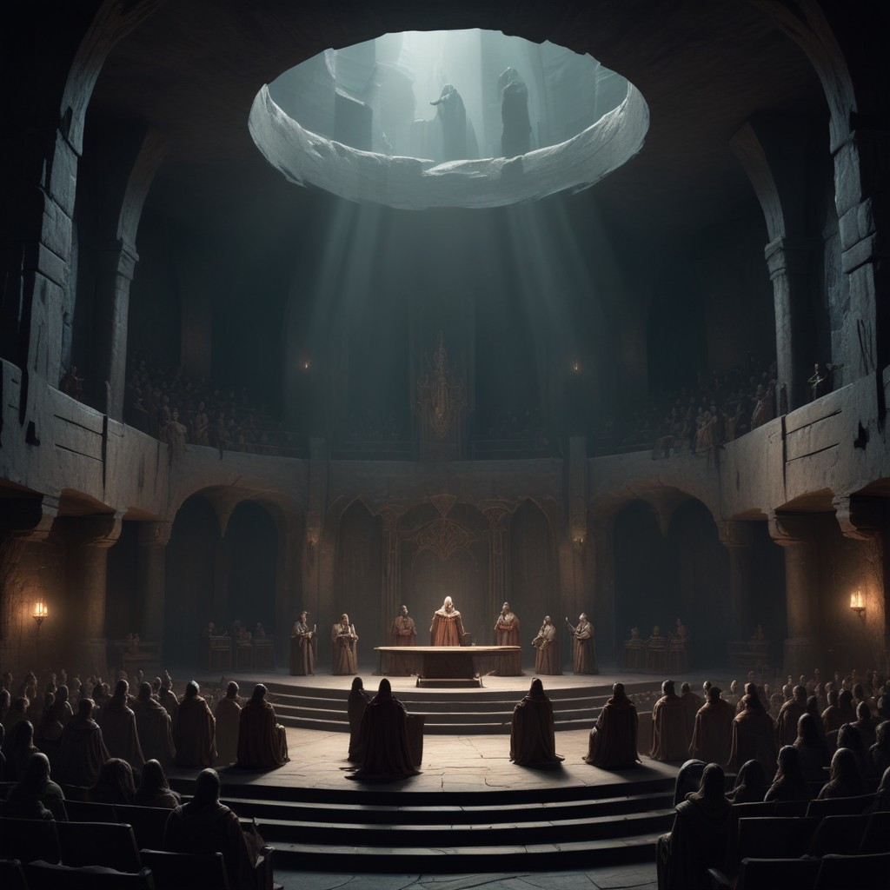
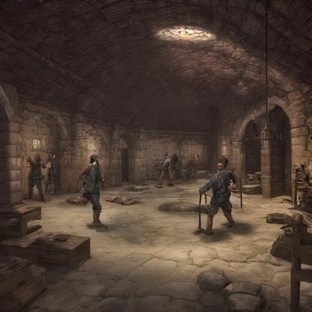

Adepten
Die Adepten sind die gewöhnlichen Mitglieder der Sekte der Erben der neuen Welt, die die täglichen Aufgaben der Sekte ausführen und ihre Botschaft verbreiten. Die Adepten sind vielseitig und entscheidend für den Erfolg der Sekte, da sie die Grundlage bilden, auf der die Macht des Sektenführers und der Hohen Priester ruht.
Alltag und Lebensweise
Die Adepten leben in gemeinschaftlichen Schlafsälen und nutzen die Trainingsräume, um ihre magischen Fähigkeiten und ihre Kampfkunst zu verbessern. Ihr Alltag ist geprägt von Ritualen, Training und der Verbreitung der Sektenlehre. Trotz der harten Bedingungen sind die Adepten durch ihren Glauben und die Hoffnung auf eine bessere Zukunft motiviert. Auch der mögliche Aufstieg zu einem Hohe Priester motiviert die Adepten täglich zu trainieren.
Rituale und Aktivitäten

Blutrituale: Adepten opfern regelmäßig einen Teil ihres eigenen Blutes bei den Vollmondritualen, um die Herstellung und Aufladung magischer Artefakte zu unterstützen. Dieses Opfer symbolisiert ihre Hingabe und ihren Beitrag zur Macht der Sekte.
Initiationsritus: Neue Mitglieder durchlaufen einen strengen Initiationsritus, bei dem sie wertvolle Artefakte, Gold oder uralte Schriftrollen opfern müssen. Dieser Akt zeigt ihre Bereitschaft, alles für die Ziele der Sekte zu geben.
Rekrutierung: Die Adepten spielen eine Schlüsselrolle bei der Rekrutierung neuer Mitglieder. Sie verbreiten die Lehren der Sekte und suchen aktiv nach neuen Anhängern in allen Bevölkerungsschichten von Eosphoros Jenseits.
Propaganda: Durch Predigten, Flugschriften und andere Mittel verbreiten die Adepten die Botschaft der neuen Ordnung. Sie nutzen jede Gelegenheit, um Zweifel an der alten Ordnung zu säen und die Vision des neuen Gottes zu verkünden.
Sabotage: Die Adepten sind auch in Sabotageaktionen gegen die Kirche der Ordnung und andere rivalisierende Gruppen involviert. Sie stören deren Aktivitäten, um die Vorherrschaft der Erben der neuen Welt zu sichern.
Opfergaben: Die Adepten sammeln Sünder, Verräter und Anhänger der Kirche der Ordnung als Opfergaben für die Rituale. Diese Opferungen stärken die Macht der Sekte und dienen als Warnung an ihre Feinde.